El resto puede ser:
-
Cero (división exacta), cuando todo el dividendo queda
distribuido perfectamente entre el divisor y no sobra nada.
-
Distinto de cero, pero siempre menor que el divisor (división no exacta),
cuando parte del dividendo no se ha podido distribuir.
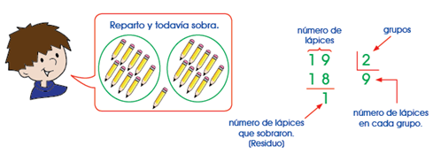
Veamos un ejemplo de división no exacta:
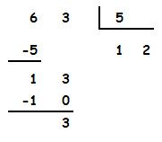
En este ejemplo, al dividir 63 en 5 grupos a cada grupo le
corresponden 12 unidades (12 x 5 = 60), pero quedan 3 unidades
sin repartir (resto) ya que no son suficientes para darle 1
más a cada grupo.
Veamos ahora otro ejemplo: vamos a dividir 45 entre 9:
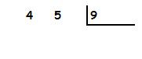
Como la primera cifra del dividendo (4) es menor que el divisor (9),
tenemos que tomar dos cifras:
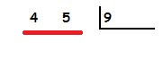
Buscamos el número de la tabla del 9 cuyo resultado más se
aproxime a 45 sin pasarse. Ese número es 5 porque 5 x 9 = 45.
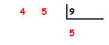
Multiplicamos 5 x 9 y se lo restamos a 45.
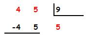
La resta da 0.
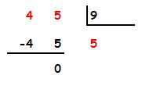
Como ya no hay más cifras del dividendo que bajar la división ha finalizado.
El cociente es 5 y el resto es 0.
Veamos ahora otro ejemplo: Vamos a dividir 307 entre 3:
Tomamos la primera cifra por la izquierda del dividendo (3).
Buscamos el número de la tabla del divisor (3) cuyo resultado más
se aproxime a 3 sin pasarse. Ese número es 1, porque 1 x 3 = 3.
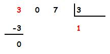
Ahora bajamos la siguiente cifra del dividendo, el 0.
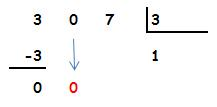
Ahora bajamos la siguiente cifra del dividendo, el 0.
Buscamos el número de la tabla del divisor (3) cuyo resultado más
se aproxime a 0 sin pasarse. Ese número es 0, porque 0 x 3 = 0.
Ponemos el 0 en el cociente y bajamos la siguiente cifra:
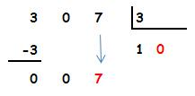
Buscamos el número de la tabla del divisor (3) cuyo resultado
más se aproxime a 7 sin pasarse. Ese número es 2, porque 2 x 3 = 6.
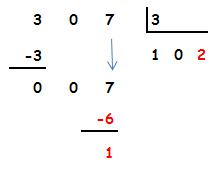
Como ya no hay más cifras del dividendo que bajar la división ha finalizado.
El cociente es 102 y el resto es 1.